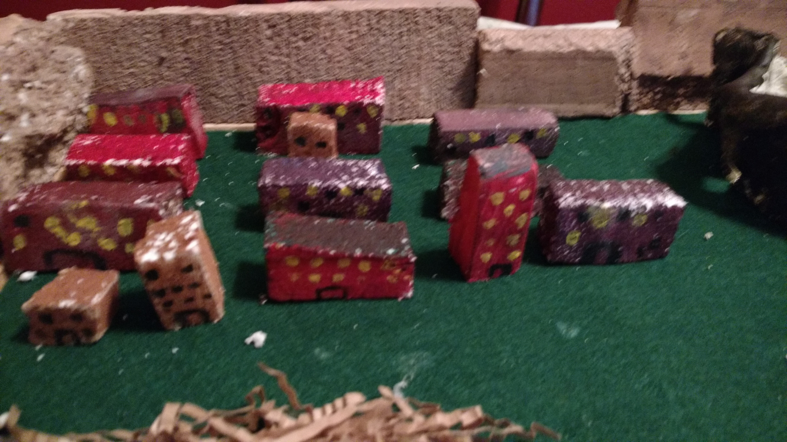
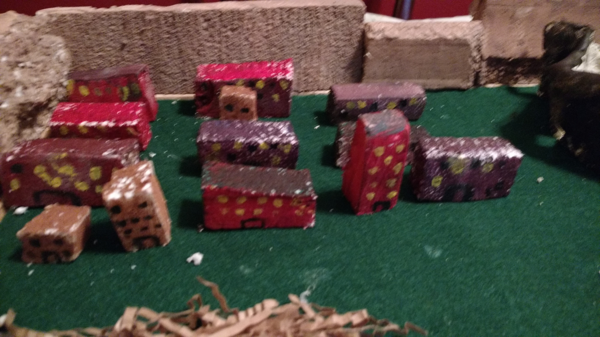

Social
- Home
- Social
- Political
- intulectual
- Economic
- City monument
- City center
- Mythology Story
- superhero story
- Citations
Social
1.Where do the various social classes live? Nobles, Merchants, Working class, poor, slaves.
No slaves but public workers with rights but have little pay
All of our classes live in the same area of our civilization but the houses are color coded to separate them red is the rich purple is the middle class and brown is the poor.
2. What do people do for entertainment?
They attend stadium events
3. What is the social structure of your society? Who is at the top and who is at the bottom?
Government controls the society but we have people contribute to laws and voting. The lower class is at the bottom (The poor). The rich are at the top `
Create a pyramid with the different classes of people. Should relate to your form of government. This will require you to determine how many people live in your civilization and what percentage will be soldiers, merchants, farmers, slaves, etc.
4. How does your social structure contribute to the order and harmony of your society?
What prevents a revolution
The government provides the lower class money 15% and our soldiers protect them we also give out something called food stamps to broke people who were in army of cthulhu. And who fought in the great harsh war of our great empire. Their SERVICE WILL FOREVER BE APPRECIATED
Works Cited
"Ancient Spartan Food and Diet." Spartan Food and Diet | Ancient Spartan Food | Ancient Spartan Diet. Legends and Chronicles, 207. Web. 09 Feb. 2017.
"BBC - Primary History - Ancient Greeks - Sparta." BBC News. BBC, n.d. Web. 08 Feb. 2017.
 
